Conclusion
Pour conclure, on remarque clairement que les différentes éthiques utilisées dans le cadre de notre problématique convergent toutes vers un avis unique : Il est grand temps de modifier la place que prend le numérique dans notre société. Que ce soit dans le domaine des industries, de la finance ou encore du privé, la numérisation de nos données a un impact négatif sur notre climat, ce qui en fait un acte éthiquement incorrecte ! Il en va de notre responsabilité de protéger notre environnement, car sans lui, nous serons privés d’une grande partie de notre bonheur.
Résultats du sondage
Comme on peut le voir ci-dessous, la majorité des personnes qui ont répondu à notre sondage ont un temps d'utilisation des technologies numériques assez conséquent. On constate aussi qu’une grande partie d’entre eux ne sont pas conscients de l’impact de leur emploi sur leur consommation d’énergie. De plus, selon les commentaires que nous avons reçus, beaucoup ne savent pas quelles mesures prendre pour limiter cet impact. Il serait donc temps pour nos gouvernements de mener des campagnes d’informations à destination du grand public !
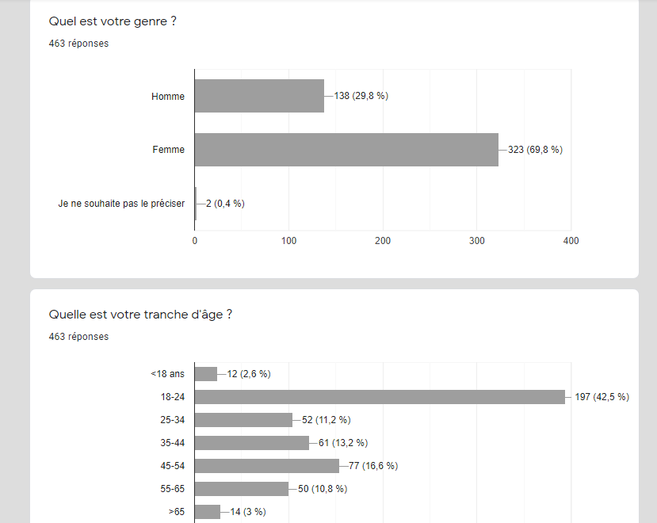 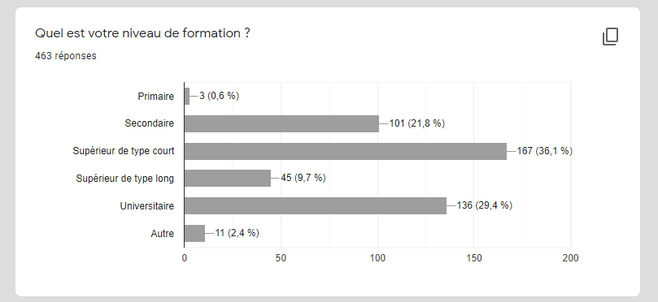 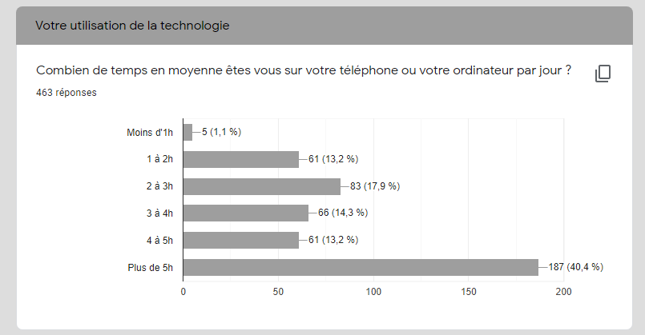 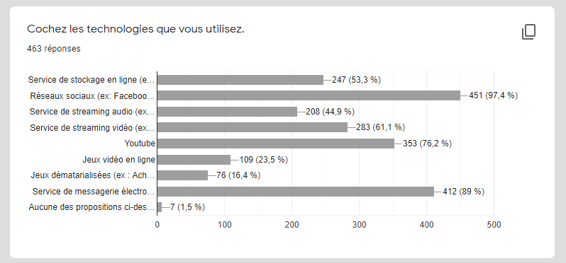 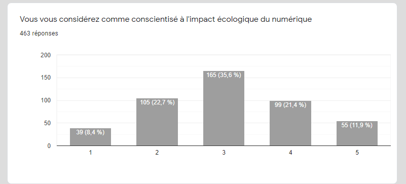 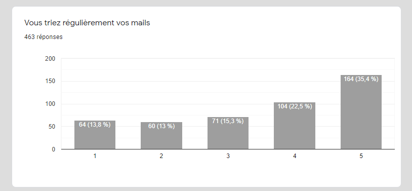 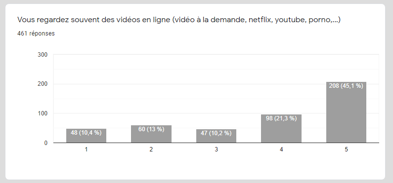 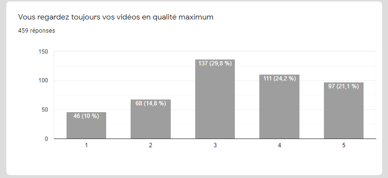 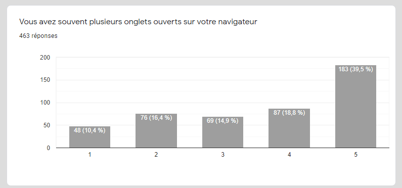 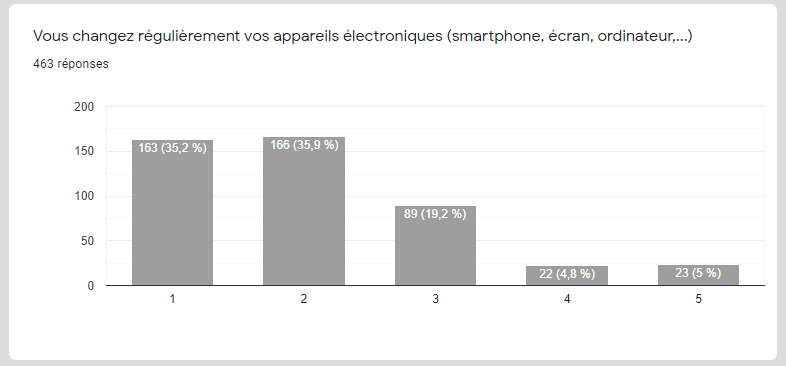 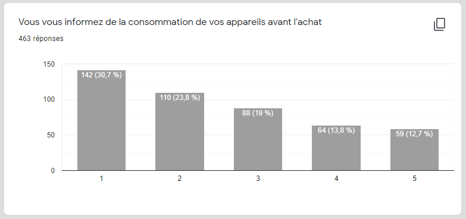 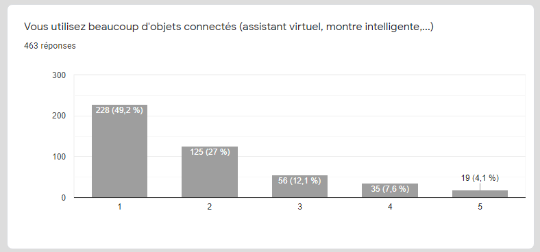 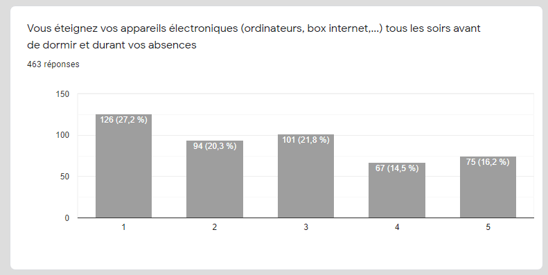